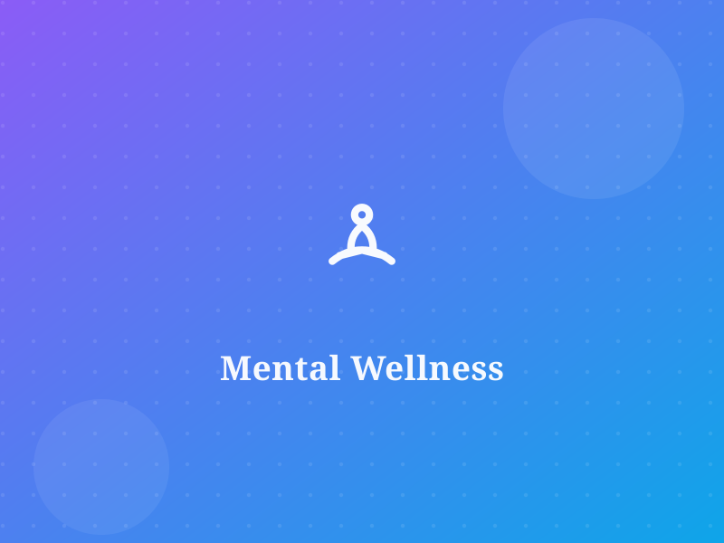
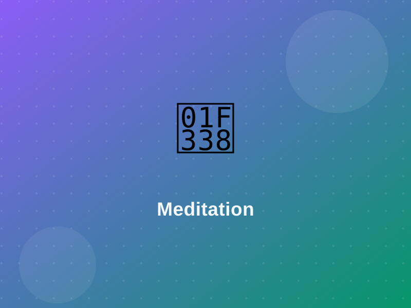
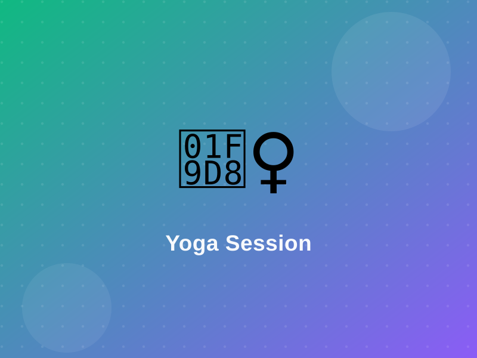

Time management
Break big tasks into small, doable steps and tackle one at a time. A simple to-do list or a 25-minute focus timer turns an overwhelming week into calm, bite-sized wins.
Caring for your mind matters just as much as caring for your body — you belong here.
Everyday life can feel like a lot — deadlines, pressures, being far from loved ones, and the quiet pressure to have it all figured out. Struggling with your mental health does not make you weak, and it is far more common than it looks.
At WellSphere, mental wellness is a priority, not an afterthought. We believe there is no shame in feeling low, anxious, or overwhelmed — and no shame in asking for help. Whatever you are carrying today, you do not have to carry it alone. This is a judgement-free space where small, kind steps are always welcome.
Join a supportive community
Naming how you feel is the first, gentlest step toward feeling better.
Pick just one to try this week — tiny habits add up.
Break big tasks into small, doable steps and tackle one at a time. A simple to-do list or a 25-minute focus timer turns an overwhelming week into calm, bite-sized wins.
Breathe in through your nose for 4 seconds, hold gently for 7, then exhale slowly through your mouth for 8. Repeat four times to slow a racing mind almost anywhere.
A short walk, a stretch, or a few star-jumps between tasks clears mental fog and releases tension your body has been quietly holding onto.
Aim for a steady sleep and wake time, dim the lights before bed, and give screens a rest an hour early. Rested minds handle stress far more kindly.
Sharing a worry with a friend, mentor, or counsellor makes it lighter. Saying things aloud helps you untangle thoughts — and reminds you that you are not alone.
Set gentle limits on doom-scrolling and notifications. Even a short, screen-free pause each day gives your attention room to breathe and reset.
Try these anywhere — in a quiet moment, in bed, or whenever things feel like too much.
Work slowly from your toes up to your forehead. Gently tense each muscle group for about 5 seconds, then release and notice the wave of relief as the tension melts away. It is a lovely way to unwind body and mind before sleep.
Feeling anxious or overwhelmed? Bring yourself back to the present by noticing:
Short, gentle practices to help you slow down and reconnect. Tap a session to preview.

A soothing guided meditation to settle a busy mind and ease into stillness.

Slow, breath-led yoga stretches to release tension and reconnect with your body.
A calming wind-down practice to quiet your thoughts and drift into restful sleep.
We can connect you with a free & confidential counselling line open to everyone — a safe, private space to talk things through with someone who genuinely cares. If you or someone you know is in crisis or needs urgent help, please contact a local crisis line or emergency services straight away. You matter, and support is always here.